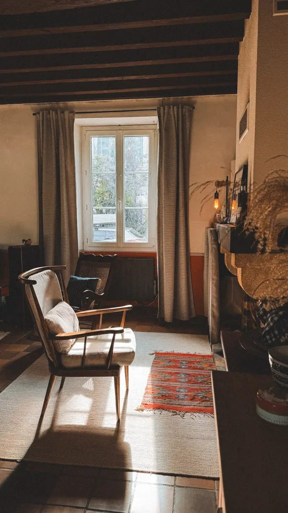

ADU & In-Law Suites
Close enough to help. Private enough to be home. If your family would rather keep Mom or Dad nearby than move them to a facility, an accessory dwelling unit — a mother-in-law suite — can be built right at home. Through our sister company, Styled Spaces, we design and build these suites, and Blessing Buddy helps your loved one settle in.

Three Ways to Build One
Attached Suite
An addition to the home — its own bedroom, bathroom, and sitting space, with a private entrance if you wish.
Garage or Space Conversion
A garage, bonus room, or underused space transformed into a comfortable, accessible small home.
Detached Cottage
A standalone backyard cottage — the most privacy of all, with family just steps away.
Why Families Choose a Suite at Home
- Mom or Dad keeps their independence — their own door, kitchen, and routines
- Family is steps away for everyday help, meals, and peace of mind
- Often far more affordable over time than monthly facility fees
- Adds lasting value and flexibility to your property — later, the suite can host guests, a caregiver, or rental income
- Grandkids grow up with grandparents close by
How It Works
- Conversation first — tell us about your loved one, your home, and what you’re picturing.
- Walkthrough & design — Styled Spaces reviews what your property allows (zoning and permitting included) and designs a suite that fits your family and your budget.
- Build — construction handled by Styled Spaces and licensed professionals, with accessibility in mind: step-free entries, walk-in showers, and room to age in place.
- Move-in — Blessing Buddy helps with the move itself — sorting, packing, setup — through our Moving & Transition Services.
- Settled in — regular Buddy visits next door: companionship, household help, and outings, with family right there.